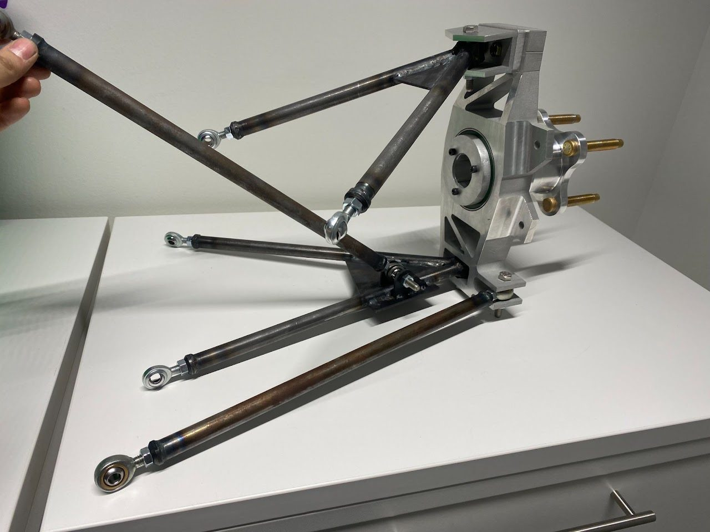
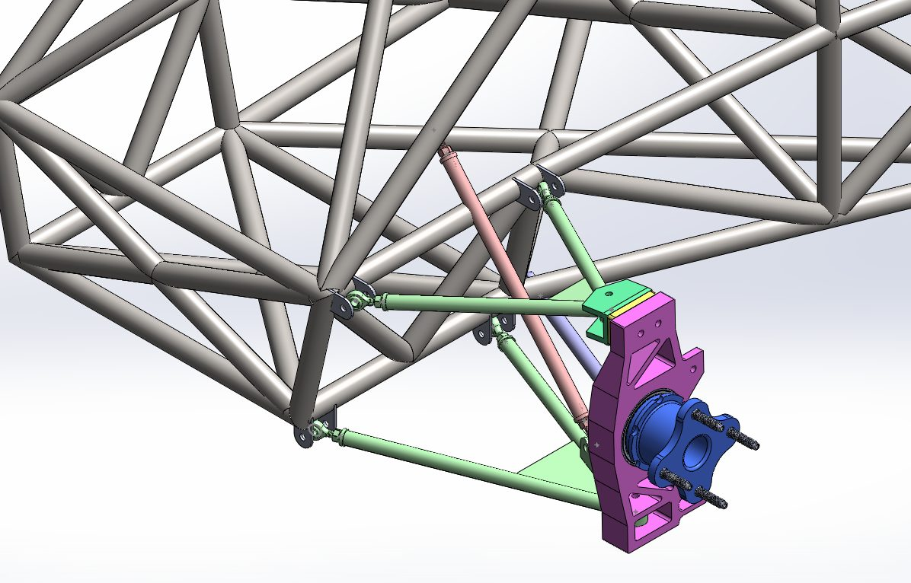
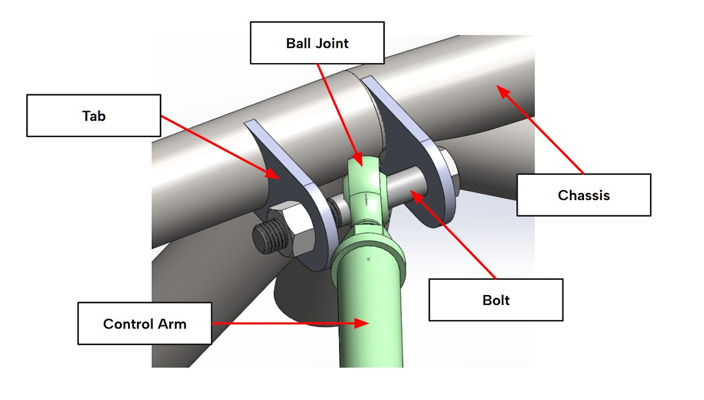
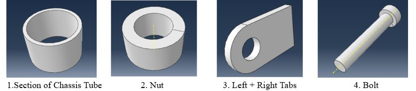
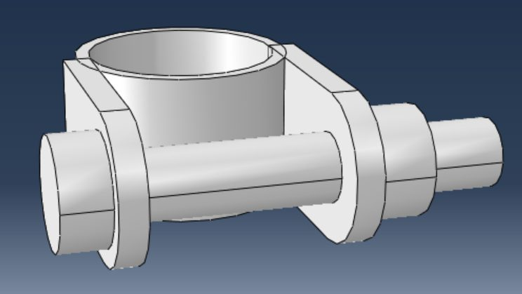
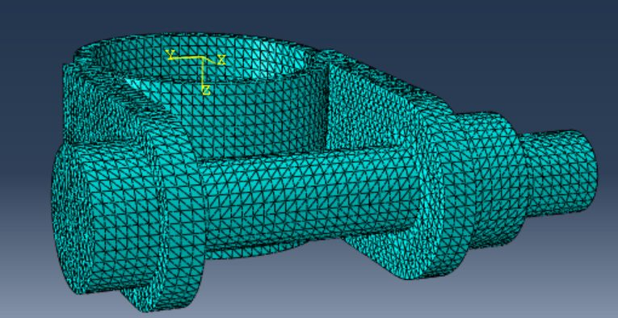
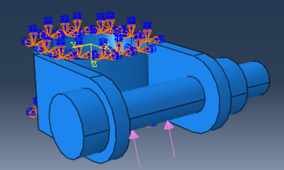
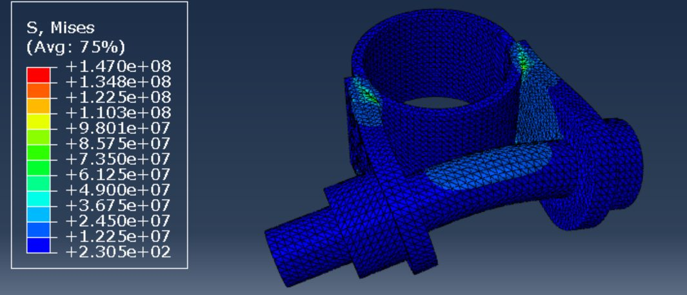
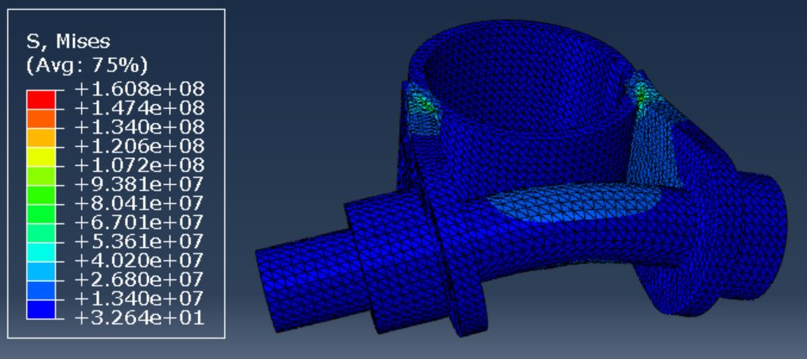

This was a final project for the FEA course at Harvard: ES128 - Computational Solid and Structural Mechanics. In this course, an FEA program is built from scratch in Matlab, which reads Abaqus CAE input files, classifies the model and element analysis type, performs the appropriate FEA calculations to each individual element and outputs the results.
For my final project, I built onto this code to make a program that performs a parameterized FEA analysis on key suspension mounting brackets and connection points for the Crimson Motorsports Formula SAE vehicle to reduce vehicle weight whilst ensuring strength.





The suspension mounts to the chassis via the control arms. These control arms have ball joints at the ends.
- On the chassis, two mounting brackets or "tabs" are TIG welded onto the frame
- These tabs have a hole in them for a bolt to go through
- This bolt goes through the ball joint on the control arms and are secured in place with a nut on the end


The suspension must remain properly mounted to the FSAE vehicle under racing conditions. This project aimed to see how thin the mounting brackets could be, without reaching the yield stress point (With a safety factor of 2). This program:
- Takes in a range of mounting bracket thicknesses as well as the number of increments to test
- Performs the FEA on the model for each thickness
- The model is altered, rebuilt and fixtured appropriately each time
- The maximum stress in each test is extracted and plotted against the varying tab thicknesses
Full assembly model in Abaqus built including:
- Section of chassis tube
- Left and right mounting tabs
- Bolt and nut
Positioned all parts in 3D space to match real-world orientation
Merged components into a single part to avoid contact errors and simplify interaction definitions






Assigned material properties:
- AISI 304 Stainless Steel
- Young’s Modulus: 190 GPa
- Yield Strength: 215 MPa
Meshed geometry using second-order tetrahedral elements (C3D10) with a seed size of 0.001 (approx. 50,000 elements)
Applied boundary conditions:
- Fully fixed the ends of the chassis tube
- Load applied under the bolt to simulate upward pull from suspension arm
Calculated loading:
- 340 kg car × 3g bump load = 10,006 N total
- Load divided by 16 mounts → 625 N per mount


Ran baseline simulation at 3.175 mm tab thickness
- Observed ~100 MPa at tab-chassis connection
- Verified model behavior (bolt folding inward, tab deflection upward)
Scripted a parametric sweep of tab thickness:
- Range: 3.175 mm → 0.5 mm (25 increments)
- Automated model rebuild, simulation, and von Mises stress extraction
Analyzed results:
- Max stress rose significantly below 2.5 mm
- Optimum thickness found at 2.5 mm with stress ≈ 106 MPa
- Achieved 7.3% reduction in mount weight





While this weight reduction is negligible within the realm of Student Formula Competition, this project can be applied to critical applications within the realm of engineering for optimizing between strength and weight/cost.